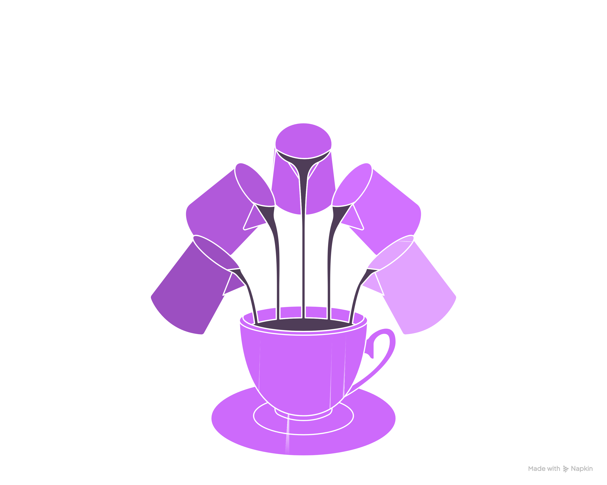
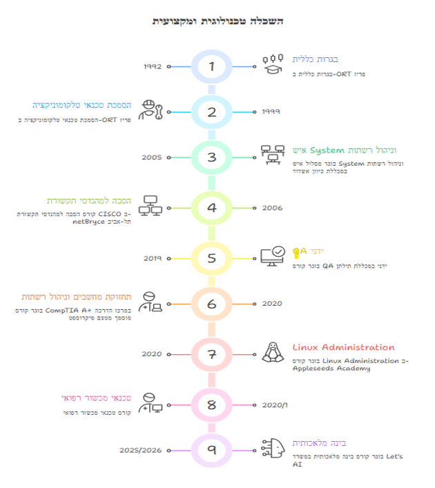

יהודה לוי054-9950634 • אשדוד • yehouda69@gmail.com
|
|
|  | |
| ניסיון תעסוקתי: | |
| 2022–2025 |
מומחה יישומים – נמל דרום אשדוד (HCT) • מתן תמיכה בממשקי מערכות הארגון לרבות: • תס"ק ים-מכס-מערכת אפקון, קמקו. • עבודה בחדר בקרה. |
| 2021–2022 |
אינטגרטור / שירות – "ארדן קונטרול טק" • קינפוג מצלמות (תוכנת מיילסטון). • בקרי כניסה. • הקמת חוות סולריות: כיול מצלמות, קינפוג בסוויצ'ים, בדיקת תקינות סיבים בחווה. • מיפוי הרשת של בית חולים אסותא אשדוד + פתרון לקריאות שוטפות. |
| 2019–2020 |
טכנאי הפעלות – "מגלקום" • קינפוג מערכות כריזה. • קינפוג מערכות קריאת אחות (פרויקט "משען גבעתיים"). • קינפוג מערכות אינטרקום (ב"ח אסף הרופא / פורייה / עמק). |
| 2008–2018 |
Senior Customer Support Engineer Tier 2 – NICE SYSTEMS • עבודה מול כל שכבות התמיכה (Tier) עד לפתרון הבעיה. • עבודה מול לקוחות ברחבי העולם: HSBC, JPMorgan, Iberdrola, Société General. • ניתוח לוגים. • חיבור מרחוק, אסקלציה ל-Tier 3 – D&R. • כתיבת פתרונות למאגר הידע הפנימי של הקבוצה. • זיהוי דחיפות הקריאה וקביעת סדר עדיפויות. • עדכון הלקוח עד לפתרון (כולל RCA). • עבודה עם ווינדוס ו-SQL. |
| 2007–2008 |
טכנאי התקנות – "Rotal Network" • התקנת רשתות בבתים. • התקנת חייגן מפ"א (מפעיל פנים ארצי) על גבי תשתיות בזק. • התקנת וחיבורים ממירי הוט. |
| 2007 |
טכנאי התקנות – "MER GROUP" • חיווט ארונות חשמל (מתח נמוך). • חיווט מצלמות / חיישנים (פרויקט רכבת ישראל). |
| 2006–2007 |
טכנאי מחשבים – עצמאי • התקנת רשתות בבתים פרטיים. • התקנת מחשבים אישיים. • טיפול בקריאות שירות ללקוחות פרטיים. |
| 2004–2005 |
תמיכה טכנית – "בזק בינלאומי" • הגדרת כרטיסי רשת (PPP, ISDN, ADSL) במערכות הפעלה שונות. • הגדרת רשתות, הגדרות דואר אלקטרוני, דפדפנים, תצורת אינטרנט, חייגנים. |
|
 |
|